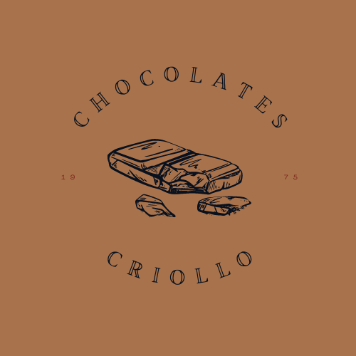

Chocolates Criollo es una empresa nicaragüense que desde su fundación en 1975 se ha especializado en la fabricación de chocolate de la más alta calidad. Al buscar incesantemente la perfección, asociamos y graduamos aromas, texturas y sabores para potenciar el máximo disfrute de nuestro chocolate. La principal materia prima de nuestros productos tiene origen en nuestra tierra y ha sido cultivada con tradición y dedicación por generaciones de pequeños agricultores a quiénes les debemos nuestra razón de ser.
Somos una agroindustria dedicada a transformar el mejor cacao del mundo para superar las expectativas de nuestros consumidores.
Ser una agroindustria de categoría mundial.
 Calidad es una actitud que hemos asumido, la cual utilizamos como herramienta para garantizar que cada día hagamos nuestro trabajo mejor.
Calidad es una actitud que hemos asumido, la cual utilizamos como herramienta para garantizar que cada día hagamos nuestro trabajo mejor.
Nuestra GENTE es el bien más valioso de la empresa. Contratamos gente calificada, promovemos activamente su mejoramiento personal y profesional y proporcionamos un ambiente de trabajo que estimula al máximo sus capacidades individuales y colectivas.
Conducimos todos nuestros asuntos dentro de los más estrictos parámetros de ÉTICA personal y corporativa y exigimos ese compromiso de todos nuestros trabajadores.
 Ante la responsabilidad que nos han delegado, tenemos el compromiso de mantener un ritmo continuo de crecimiento y DESARROLLO dentro de los parámetros administrativos más sanos y prudentes, no solo para lograr una diversificación de nuestras actividades, sino para garantizar un adecuado retorno sobre el capital invertido en la empresa.
Ante la responsabilidad que nos han delegado, tenemos el compromiso de mantener un ritmo continuo de crecimiento y DESARROLLO dentro de los parámetros administrativos más sanos y prudentes, no solo para lograr una diversificación de nuestras actividades, sino para garantizar un adecuado retorno sobre el capital invertido en la empresa.
Mantendremos una posición de liderazgo en la defensa y protección del AMBIENTE, con lo cual aspiramos cumplir con lo que consideramos es una responsabilidad de toda industria y contribuir así al mejoramiento de la calidad de vida de las próximas generaciones de venezolanos.
Este chocolate extra amargo y sedoso tiene una suave sensación en boca, un prolongado sabor de cacao y una terminación frutal y de nueces en el paladar. Está diseñado especialmente para moldeos y baños, pero también puede utilizarse fácilmente para mousses, ganaches, rellenos, glaseados y sorbetes. Su alto contenido de grasa y su textura suave lo hacen un excelente chocolate multipropósito. Está ligeramente saborizado con vainilla natural.
Tabletas de 80 gramos, 30 gramos y carrés de 5 gramos.
Consérvese en lugar seco y fresco, preferiblemente a temperaturas entre 16ºC y 20ºC y máximo 60% de humedad relativa.
Este chocolate espeso y exquisito tiene un robusto contenido de cacao de 70%. Es sumamente aromático y proyecta un sabor frutal y de nueces bien balanceado, con un prolongado sabor de cacao. Esta fórmula está diseñada principalmente para elaborar mousses, rellenos, ganaches, sorbetes y glaseados, y no se recomienda para moldeos o baños. La fórmula maximiza el sabor natural del grano Carenero Superior, y está ligeramente saborizada con vainilla natural.
Tabletas de 80 gramos, 30 gramos y carrés de 5 gramos.
Consérvese en lugar seco y fresco, preferiblemente a temperaturas entre 16ºC y 20ºC y máximo 60% de humedad relativa.
Su textura suave provee un balance de todas las cualidades que el grano Carenero Superior ofrece. Presenta el aroma y sabor de Carenero Superior de una manera sutil y balanceada y un prolongado sabor de cacao en el paladar. Esta fórmula tiene alto contenido de grasa, y a la vez que puede usarse en un gran rango de preparaciones, aplica más para baños y moldeos. Está saborizado con vainilla natural.
Tabletas de 80 gramos, 30 gramos y carrés de 5 gramos.
Consérvese en lugar seco y fresco, preferiblemente a temperaturas entre 16ºC y 20ºC y máximo 60% de humedad relativa.
Las cualidades aromáticas y de sabor de Carenero Superior están muy presentes en esta fórmula de chocolate oscuro suave y ligeramente dulce. Los mejores usos para este chocolate son mousses, ganaches y glaseados, pero con su mediano contenido de grasa, es posible utilizarlo también para otras preparaciones más líquidas. Saborizado con vainilla natural.
Tabletas de 80 gramos, 30 gramos y carrés de 5 gramos.
Consérvese en lugar seco y fresco, preferiblemente a temperaturas entre 16ºC y 20ºC y máximo 60% de humedad relativa.

Las cualidades aromáticas y de sabor de este grano, junto al uso de materias primas de alta calidad y un proceso industrial de primera categoría, dan origen a este chocolate sedoso y bien balanceado. Este chocolate con leche, con un alto contenido de cacao, acentúa el sabor del cacao en vez del resto de los ingredientes de la fórmula, como lo son la leche y el azúcar.
Tabletas de 80 gramos, 30 gramos y carrés de 5 gramos.
Consérvese en lugar seco y fresco, preferiblemente a temperaturas entre 16ºC y 20ºC y máximo 60% de humedad relativa.
El chocolate blanco ICOA toma su nombre de Icoa-Uru, una mítica diosa indígena adorada por sus seguidores por siempre estar vestida de blanco, y porque sentían que tenía un alma blanca. El Icoa se elabora con Manteca de Cacao de Primera Calidad y tiene una textura suave, lechosa y sedosa, con poco contenido de azúcar, lo que lo hace destacarse de entre los demás chocolates blancos en el mercado. Saborizado con vainilla natural.
Tabletas de 80 gramos, 30 gramos y carrés de 5 gramos.
Consérvese en lugar seco y fresco, preferiblemente a temperaturas entre 16ºC y 20ºC y máximo 60% de humedad relativa.